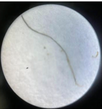
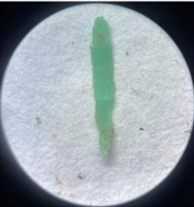
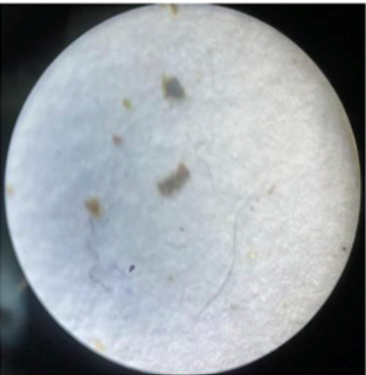
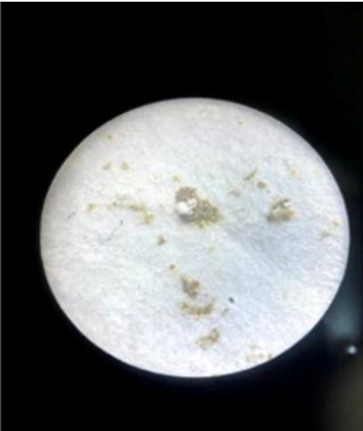
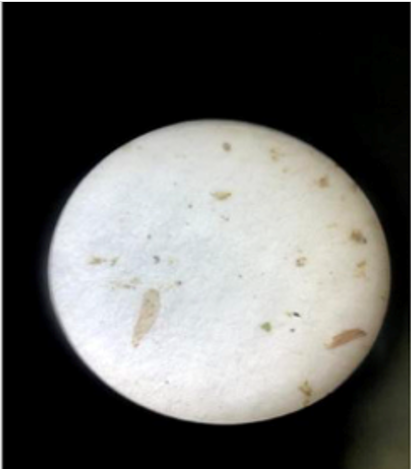

Jenis-Jenis Mikroplastik yang Umum Ditemukan
Mikroplastik dapat dibedakan berdasarkan bentuk fisiknya. Bentuk ini membantu kita mengidentifikasi kemungkinan sumber pencemaran dan proses penyebarannya di lingkungan.




